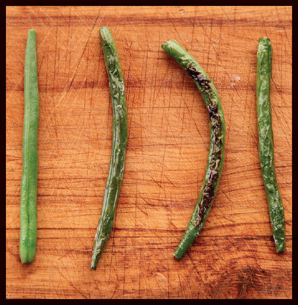

SICHUAN-STYLE BLISTERED GREEN BEANS

Gan bian si ji dou—Sichuan-style dry-fried green beans with chiles and pickles—is one of my favorite vegetable dishes in the world. It’s a bright and flavorful dish, featuring beans with blistered skins and snappy interiors, plenty of mouth-tingling Sichuan peppercorns, and the funky aroma of ya cai—preserved mustard root—along with plenty of garlic and ginger.
While many restaurants will start the dish off by deep frying green beans or long beans to get them to blister and shrivel, doing this prevents the beans from charring in spots, an essential step if you want to maximize flavor. The better method is to dry-fry them (see here for more on dry-frying). For this process, you use a wok with a moderate amount of very hot oil—not enough to completely submerge the beans, but just enough that the beans can shallow-fry while also charring in spots. Once the beans are cooked, they’re drained of excess oil, then briefly stir-fried in fresh oil laced with aromatics.
The method is quite easy to do at home, and I’m including instructions for the process in this recipe, but it does leave you with a cup of slightly used oil to deal with after your meal. This drained oil is perfectly fine to reuse, but I understand the hesitation some people show when they realize they’re going to have to strain hot oil. Wouldn’t it be great if there were a method that gave you similar results without the need for all that excess fat?
To this end, I tried a half dozen different techniques, starting with the most common: blanching in water and shallow-frying. The former method, touted by the always-incredible Fuchsia Dunlop, produces a dish that’s very tasty, with bright, fresh flavors and nice snappy beans. In fact, if you’re the kind of person who likes green beans bright and snappy, I highly recommend skipping the dry-fry step in my recipe and blanching your green beans instead.
But for my own recipe, I turned my attention to the oven. I figured that if I were to preheat my oven enough, I might be able to get a similar effect by tossing my beans in a little oil and throwing them in for a few moments. The regular oven, even when heated to its maximum temperature of 550°F, didn’t cook quite fast enough—the beans still turned soft by the time they were blistered—but the broiled beans were fantastic. By letting the broiler heat up to inferno-levels, then placing the beans as close as possible underneath, I was able to get them to blister and brown in record time.
The rest of the recipe is very straightforward: you stir-fry some minced pork (or omit it) with garlic, ginger, Sichuan peppercorn, and ya cai (see Note), add some snipped dried chiles, then add the beans, season, and serve.
|
Yield Serves 4 |
Active Time 20 minutes Total Time 20 minutes |
If broiling the green beans instead of dry-frying, reduce the amount of oil for the green beans to 1 tablespoon (15 ml). This dish is quite numbing from the green Sichuan peppercorns. For a milder effect, use red peppercorns and reduce the amount to 1 or ½ teaspoon. Ya cai can be ordered online or found at most Asian supermarkets. If unavailable, you can use a mix of finely chopped sauerkraut or kimchi mixed with finely chopped capers. The pork is optional. If you prefer to leave it out, just skip the bit where you stir-fry it in step 3, jumping straight to adding the Sichuan peppercorns, garlic, and ginger instead.
INGREDIENTS
For the Green Beans:
½ cup (120 ml) peanut, rice bran, or other neutral oil (see Notes)
1 pound (450 g) green beans or long beans, trimmed and cut into 2-inch segments
Kosher salt
For the Stir-Fry:
1 tablespoon (15 ml) peanut, rice bran, or other neutral oil (this can be the same oil you shallow-fried the beans with if using the wok method)
2 ounces (60 g) ground pork (optional; see Notes)
2 teaspoons (4 g) whole Sichuan peppercorns, preferably green
1 tablespoon (7.5 g) minced garlic (about 3 medium cloves)
1 tablespoon (7.5 g) minced fresh ginger (about ¾-inch segment)
2 tablespoons (about 20 g) finely minced ya cai (see Notes)
6 whole dried small hot chiles (such as árbol), stems removed, snipped into 1-inch segments
2 teaspoons (10 ml) light soy sauce or shoyu
2 teaspoons (10 ml) Chinkiang or balsamic vinegar
1 teaspoon (4 g) sugar
DIRECTIONS
1To Blister Beans in a Wok (if using the broiler method, skip to step 2): Heat the oil in a wok over high heat until very lightly smoking. Add half of the green beans and cook, stirring and tossing occasionally, until the beans are cooked through, blistered, and spotty dark brown, about 4 minutes. Using a spider, transfer them to a rimmed baking sheet and set aside. Return the oil to the heat until lightly smoking and repeat with remaining green beans, adding them to the same tray with the first. Sprinkle all the beans with a little kosher salt. Drain off all the oil, reserve 1 tablespoon for the stir-fry, and save the rest for another use. Skip to step 3.
2To Blister Beans under a Broiler: Position the rack as close as possible to the broiler and preheat the broiler to high. In a large bowl, toss the green beans with 1 tablespoon (15 ml) oil and season with salt. Arrange in a single layer on a foil-lined rimmed baking sheet or broiler pan. Broil until the beans are blistered and very lightly charred, 2 to 5 minutes depending on the strength of your broiler. Return the beans to the bowl.
3For the Stir-Fry: Heat the wok over high heat until lightly smoking. Add 1 tablespoon (15 ml) oil and swirl to coat. Immediately add the pork (if using). Stir-fry until the pork is no longer pink, about 45 seconds, then immediately add the Sichuan peppercorns, garlic, ginger, and ya cai and stir-fry until aromatic, about 15 seconds. Add the snipped chiles and stir-fry until aromatic, another 15 seconds.
4Add the blistered green beans to the wok and toss to coat in the aromatics. Add the soy sauce and vinegar around the edge of the wok. Add the sugar. Toss thoroughly, season to taste with more salt, transfer to a serving platter, and serve immediately.